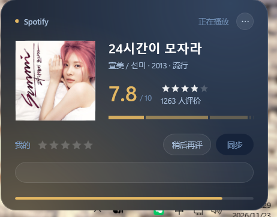
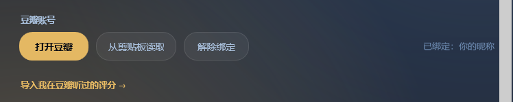
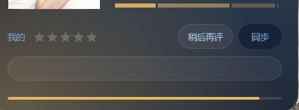
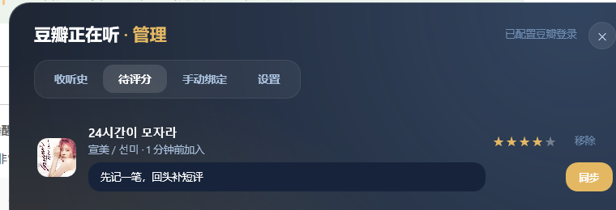
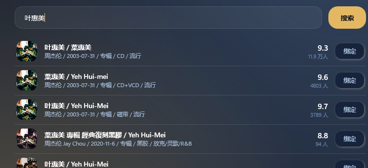

使用教程
5 分钟看完，就能用起来。
一、启动
双击 启动.bat（或桌面快捷方式「豆瓣正在听」）。
浮窗出现在屏幕右下角，本地服务会自动在后台跑起来。默认「自动识别」——谁在放歌就认谁（Apple Music / Spotify / 网易云 / QQ 音乐）。

退出：在浮窗上右键 → 退出。 管理：点浮窗右上角的 ⋯，或双击 管理.bat。
小提示：浮窗可以拖着走——按住顶栏或封面拖动即可。Ctrl+滚轮能缩放。
二、第一次使用：绑定豆瓣（只做一次）
没有豆瓣账号也能看评分，但要给专辑打分并同步回豆瓣，必须先绑定。
- 打开管理窗口 → 设置 标签 → 点 「打开豆瓣」
- 在浏览器里登录豆瓣（登录过的可以跳过）
- 按 F12 → 网络 / Network 标签 → 刷新页面
- 点任意一个
douban.com请求 → 标头 / Headers → 找到Cookie，右键「复制值」 - 回到设置窗口 → 点 「从剪贴板读取」

成功后右上角会显示 「已绑定：你的昵称」。
三、导入你「听过」的评分（建议做一次）
绑定完，点 设置 → 「导入我在豆瓣听过的评分 →」。
它会把你豆瓣上已有的星级和短评全部拉进来（约 1700 张，2–3 分钟）。
导入过的专辑，浮窗会直接显示你当年打的分和写的短评，按钮是 「已同步」——不会误覆盖。
中途关掉也没事，下次会从断点继续。
四、日常使用
在 Apple Music / Spotify / 网易云 / QQ 音乐里播放一张专辑，浮窗会在 2–4 秒后自动出现豆瓣信息。
浮窗上每一块是什么：
| 位置 | 内容 |
|---|---|
| 左上角 | 播放器名 · 当前曲目（如 Spotify · 24시간이 모자라） |
| 右上角 | 播放状态 + 「⋯」菜单 |
| 封面右侧 | 专辑名、艺人 · 年份 · 流派 |
| 大数字 | 豆瓣评分，右边是豆瓣星级和评价人数 |
| 金色横条 | 评分分布（几星各占多少） |
| 我的 | 你自己打的星 |
打分：点「我的」那排星星（1–5 星） 写评语：星星下方那行输入框，输入完按回车或用鼠标点别处就保存 同步：点 「同步」，这张专辑就进了你豆瓣的「听过」

五、没空打分？用「稍后再评」
点 「稍后再评」，这张专辑就进了 管理 → 待评分。
以后在待评分里：
- 点星打分 + 写评语
- 点 「同步」 写入豆瓣，成功后自动从列表消失
- 不想评了点 「移除」

六、设置里能改什么
打开 管理 → 设置：
| 设置项 | 说明 |
|---|---|
| 播放器 | 自动 / Apple Music / Spotify / 网易云 / QQ 音乐。选「自动」= 谁在播就认谁；指定后只认这一个 |
| 界面皮肤 | 新拟物（浅色）/ 玻璃拟态（深色） |
| 豆瓣账号 | 打开豆瓣、从剪贴板读取、解除绑定、导入听过的评分 |
七、豆瓣没找到这张专辑？
浮窗会显示 「豆瓣没找到这张 · 右键「手动绑定」」。这时：
- 右键浮窗 → 历史与设置…（或点 ⋯ → 历史与设置）
- 切到 手动绑定 标签
- 输入专辑名搜索 → 在结果里找对的那张 → 点 绑定
搜索结果按评价人数从多到少排列，下面标着人数（7.8 万人 / 4624 人），一般第一个就是你要的。

绑定之后，这张专辑以后都会直接认出来，不用再绑。
八、常见问题
Q：浮窗一直显示「等待播放」？ 确认播放器真的在放歌（不是暂停）。再看 设置 → 播放器 是不是被限定成了别的播放器。
Q：网易云 / QQ 音乐没反应？ 双击 检查播放器.bat，它会列出系统当前检测到的播放器，并直接告诉你「会被识别 ✅」还是「不会 ❌ + 原因」。
Q：点同步提示「没拿到 ck 令牌」？ 豆瓣登录状态可能失效了，重新做一次第二步。
Q：提示「豆瓣没找到这张」但专辑明明有？ 豆瓣在限流（短时间请求太多）。等 10–30 分钟会自动恢复，不用重启。
Q：点了 ⋯ 没反应？ 右键浮窗任意位置，效果一样。
Q：同步到豆瓣后落在「在听」而不是「听过」？ 旧版本的问题，现在已修。如果还有，把豆瓣账号重新绑定一次。
九、几个快捷操作
| 操作 | 效果 |
|---|---|
| 顶栏 / 封面拖动 | 移动浮窗 |
| Ctrl + 滚轮 | 放大 / 缩小浮窗 |
| 右键浮窗 | 打开菜单（历史与设置 / 待评分 / 写评分 / 置顶 / 缩放 / 退出） |
| 管理窗口按 Esc | 关闭 |
--settings 启动参数 | 直接打开管理窗口 |
需要更详细的技术说明，看 README.md 和 docs/项目说明.md。